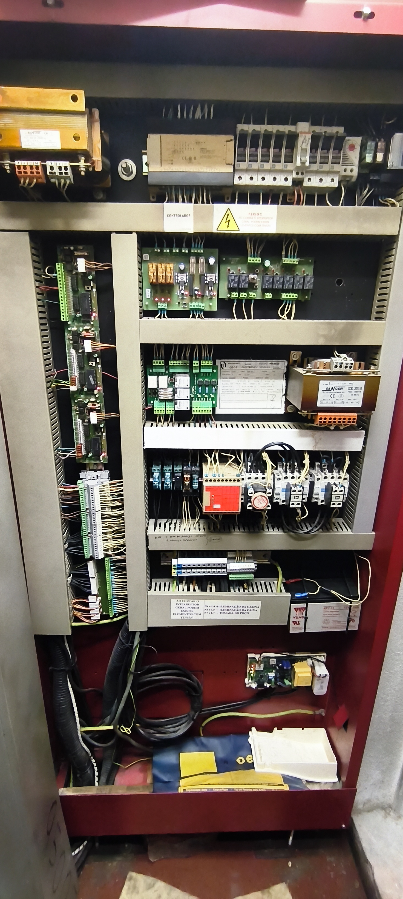

• Risco Elétrico: A cadeia opera a 120V AC, perigo real de choque elétrico.
• Ordem Lógica: Siga a sequência lógica dos bornes. Se medir 120Vac no borne 11 mas encontrar 0V no borne 12, a avaria estará num dos limitadores de velocidade.
| Componente Técnico / Circuito | Pontas do Multímetro |
|---|---|
|
Alimentação Início da Linha de Segurança Proteção do circuito no fusível F2 (4A) até à entrada comum |
F2 ➔ Borne 10
|
|
Gerais Caixa / Poço Série de Dispositivos e Limites Roda tensora contrapeso, roda tensora cabine, stop poço, FC inferior e FC superior |
Borne 10 ➔ Borne 11
|
|
Gerais Mecânicos Limitadores de Velocidade Limitador de velocidade do contrapeso e limitador de velocidade da cabine |
Borne 11 ➔ Borne 12
|
|
Gerais Cabine Componentes de Cabine Contacto de alongamento de cabos e contacto mecânico do páraquedas |
Borne 12 ➔ Borne 13
|
|
Portas / Trincos Fecho de Portas de Piso Contacto de presença das portas semi-automáticas de piso |
Borne 13 ➔ Borne 14A
|
|
Gerais Cabine Revisão e Cabine Stop da botoneira de revisão e encravamento das portas de cabine |
Borne 14A ➔ Borne 14
|